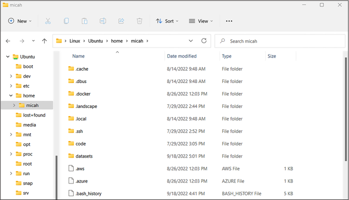

WSL generally works well, but you may encounter a few issues, particularly related to disk performance, when you attempt to crunch data stored on Windows-formatted disks from your Linux terminal. Some tasks may take your computer hours or days to finish when they should take just minutes. This appendix teaches Windows users more about the quirks of the Linux filesystem, as well as various possible solutions to the disk performance problem. It’s optional for Windows users, but if you do run into a situation where programs are taking considerably longer to run than I describe, this appendix should help you diagnose the problem and come up with a solution.
I recommend waiting to read this appendix until after you finish Chapter 3, where you’ll install WSL, and Chapter 4, where you’ll learn the command line code required to implement the performance solutions described here. You might need to reference this appendix in Chapter 5, while you’re bind-mounting in Docker or indexing datasets in Aleph; in Chapter 11, while you’re using Linux tools to extract over a million files; and in Chapter 12, while you’re importing 20GB of data into a SQL database running in Docker.
Understanding WSL’s Linux Filesystem¶
Before solving any problems that you might encounter with WSL, you’ll need to understand how and where WSL stores your Linux files. In this section, you’ll learn how the WSL Linux filesystem works in Windows, how to access Linux files in Windows, and, conversely, how to access Windows files in Linux. I also outline some of the simpler problems you might encounter and how to solve them.
Your WSL Linux filesystem contains much more than just the data you
store there. It includes a complete copy of the Ubuntu operating system,
and when you install new programs using apt, it installs those into the
Linux filesystem, too. Just as in a real Ubuntu system, / is the root
folder, and it contains all of the usual default folders for Ubuntu
systems. In your Ubuntu terminal, list the folder names in the root
filesystem by running the ls / command. This should give you the
following output:
bin dev home lib lib64 lost+found mnt proc run snap sys usr
boot etc init lib32 libx32 media opt root sbin srv tmp var
This output lists all of the folders inside the root folder in your
Ubuntu system. Your home folder is in /home. For example, since my
Ubuntu username is micah, my Ubuntu home folder is /home/micah. If
you’re using Windows 11 or newer, you should be able to browse your
Linux files directly from File Explorer. When you’re browsing your Linux
files, you see all of the Linux files, not just the data in your home
folder. If you’re running a new enough version of Windows, change to
your home folder (cd ~) and
then run the command explorer.exe . to open your current working folder in
Linux in Windows File Explorer.
NOTE If you ever need to run a Windows program in Linux (such as explorer.exe), run Linux programs in Windows, or otherwise do more advanced tasks in WSL, check out Microsoft’s detailed documentation at https://learn.microsoft.com/en-us/windows/wsl/filesystems.
For example, Figure A-1 shows a list of Linux files viewed in the Windows File Explorer app.

Figure A-1: Browsing Linux files in File Explorer in Windows
It’s also helpful to understand the different behaviors of Windows and Linux filesystems. The Windows filesystem format is NTFS, and the most popular Linux filesystem format is ext4. Each Linux file has separate permissions for reading, writing, and executing, but files on NTFS systems don’t have this metadata.
If you’re accessing a Windows filesystem within Linux (when you access /mnt/c in WSL, for example), Linux treats every file as having read, write, and execute permissions, and you can’t change these permissions by default. This often isn’t a problem, but it does mean that if you copy files from Linux to Windows, you’ll lose their original permissions. If you want to be able to use file permissions, you’ll need to work with files on a proper Linux filesystem instead.
Under the hood, the WSL Linux filesystem is stored in a single file in the C: drive in your user’s home folder. On my Windows 11 computer, the filename is C:\Users\micah\AppData\Local\Packages\CanonicalGroupLimited .UbuntuonWindows_79rhkp1fndgsc\LocalState\ext4.vhdx. The path on your computer will be slightly different, but the file containing your Linux filesystem will still be called ext4.vhdx. The more data you store in your Linux filesystem, the bigger the ext4.vhdx file gets.
For example, suppose you want to save your datasets directly to your Linux filesystem in the folder ~/datasets, rather than to a USB disk. Downloading the BlueLeaks dataset to that folder will cause your ext4.vhdx file to grow hundreds of gigabytes larger. Because your whole WSL Linux filesystem is stored on your C: drive, this means you only have as much disk space available in Linux as you have free space on that drive. In addition to the limits of free space on your C: drive, by default, your WSL Linux filesystem can only take up a maximum of 256GB.
If you want to store more data than this, you’ll need to take additional steps to expand the size of your Linux filesystem. Find detailed instructions for doing this at https://learn.microsoft.com/en-us/windows/wsl/vhd-size.
Finally, you might come across a situation where you open an Ubuntu terminal, try to access a Windows-formatted USB disk in /mnt, and find that it’s just not there. This is because you need to have mounted your Windows USB disk (plugged it in and, if it’s encrypted, entered your BitLocker password) before opening the Ubuntu shell. If you can’t access a USB disk from Ubuntu at a path like /mnt/d (assuming your USB disk is mounted to the D: drive), you’ll need to restart WSL.
To do so, open PowerShell and run wsl --shutdown. This will close all open Ubuntu
terminals and stop any running Docker containers. Afterward, open an
Ubuntu terminal again, and you should be able to access that USB disk.
With the basics of WSL out of the way, let’s discuss the primary problem you might encounter: disk performance.
The Disk Performance Problem¶
Using Windows files in WSL, like the disks mounted in /mnt, has major performance issues. Reading from and writing to disks takes considerably longer when you’re working with files on a Windows disk than when you’re working with them on WSL’s Linux filesystem, like those in /home. Some disk-intensive tasks, like extracting a compressed file that contains a million small files, might take several hours on a Windows disk, when the same task could be completed in seconds on a Linux disk. These performance issues can severely cut into your ability to get anything done.
For this reason, Microsoft recommends that you store data in the same
operating system filesystem as the tools you plan to use. Using Linux
tools like find,
grep, and unzip (see Chapter 4) or making your data searchable using Aleph
(see Chapter 5) will work best if you store
your datasets in the Linux filesystem. Meanwhile, analyzing datasets
with Windows software, such as 7-Zip, will work best if those datasets
are stored in the Windows filesystem.
By far the simplest solution to the performance issue is to store all of your datasets in your Linux filesystem and use Linux tools to work with them. However, datasets are often too large to fit in the C: drive. For example, BlueLeaks alone takes up over half the disk space I have available on the laptop I’m using right now. This gives you no choice but to store the datasets on a USB disk like the datasets disk that you encrypted in Chapter 1. If you don’t have enough space on your C: drive to work with all of the data that you’d like to, you’ll need to implement one of the solutions I discuss in the following section.
You can sometimes work around disk performance
problems by simply using native Windows programs rather than Linux
programs to do your most disk-intensive tasks. Throughout this book, I
suggest using native Windows tools when appropriate. For example, the
Linux programs unzip and
tar are used to extract
compressed files. Extracting files saved on a Windows disk using these
tools can be extremely slow if you’re working from WSL. Instead, you can
just use a Windows archive program like 7-Zip, as you did in Chapter
4 to unzip BlueLeaks. Since extracting
compressed files with 7-Zip doesn’t involve WSL at all, there’s no disk
performance problem.
Likewise, when you’re running Python scripts, you can use the Windows version of Python (downloadable from https://www.python.org) rather than the Ubuntu version. This allows your Python scripts to crunch data from your Windows-formatted USB disk, bypassing the WSL performance problem, which is why Chapter 7 advises you to use PowerShell instead of WSL.
This technique can only take you so far, though. There aren’t always native Windows alternatives. For instance, you can’t run Docker containers, which are required for running software like Aleph, without WSL. For those cases, you’re better off storing your data in a Linux filesystem using one of the following solutions.
Solving the Disk Performance Problem¶
This section covers two potential solutions to the WSL disk performance problem: storing only datasets you’re actively working with in your WSL Linux partition, or storing your entire WSL Linux partition on a USB disk with more disk space than your C: drive has available. I recommend the first, simpler option if you just want to be able to easily work through this book. The second option is a better long-term solution if you plan to routinely work with large datasets using Linux tools in Windows in the future.
Storing Only Active Datasets in Linux¶
If you don’t have enough free space for all your datasets on your C: drive, you can store just those you need for your current work in your Linux filesystem, keeping the rest on your USB disk. For example, you could copy the folders that you’re actively working with into your Ubuntu home folder (that is, in ~/datasets) and keep them there while you’re conducting a specific investigation. When you no longer need to work with these files, copy them back to your external Windows disk and delete them from your home folder to clear up space.
Storing Your Linux Filesystem on a USB Disk¶
Another option is to move your whole Ubuntu installation—that is, the ext4 .vhdx file that contains your Linux filesystem—to a USB disk with lots of free space. This way, if you store all your datasets in your Ubuntu home folder (in ~/datasets), the data will physically be stored on your USB disk instead of on your internal C: drive.
With this solution, you won’t be able to open
an Ubuntu terminal unless your USB disk is plugged in and mounted, which
is less convenient. If you try opening an Ubuntu terminal while your USB
disk isn’t mounted, you’ll get the error message
The system cannot find the path specified. However, I recommend using this
method if you plan to investigate your own datasets in the future.
Here’s how to implement it.
Open a PowerShell terminal and create a new folder on your external USB disk to store your Linux filesystem by running the following command:
New-Item -Path D:\WSL -ItemType 'directory'
In PowerShell, the New-Item
command creates a new file or folder. In this case, it’s creating a new
folder at D:\WSL. If you’d like to store your ext4.vhdx file
somewhere else, you can change the path when you run this command.
WSL lets you install multiple Linux distributions (that is, versions of
Linux) at the same time. In order to move one of them to your USB disk,
you’ll need to know its name. It’s probably called Ubuntu, but you can
check by running the wsl --list command:
PS C:\Users\micah> wsl --list
Windows Subsystem for Linux Distributions:
Ubuntu (Default)
docker-desktop-data
docker-desktop
This output lists each WSL distribution that you have installed. In my
case, I have Ubuntu (my
default distribution), as well as docker-desktop -data and docker-desktop, which are both used by Docker
Desktop. If you’ve worked through Chapter 5
and installed Docker Desktop yourself, you should have these WSL
distributions too.
The following steps show you how to move a WSL distribution from the C: drive to a USB disk. These instructions focus on the Ubuntu distribution, but if any other WSL distributions are taking up too much space on C: as well, you could follow the same steps to move them to a USB disk, making sure to change the distribution name when you run the commands. I don’t recommend moving the Docker distributions, though, as this might cause issues with Docker Desktop working correctly.
Once you’ve confirmed the name of the distribution you’d like to move to
your disk, export a copy of it with the following command, replacing
Ubuntu with the
appropriate name:
wsl --export Ubuntu D:\WSL\backup.tar
This should save a copy of all of the data from your chosen distribution into the file D:\WSL\backup.tar. Once this finishes, unregister the Ubuntu distribution on your C: drive from WSL by running this command:
wsl --unregister Ubuntu
This will remove the distribution from your computer and delete the Linux filesystem file ext4.vhdx. That’s okay, because you just made a backup.
Next, import your backup, this time telling WSL that you want your data for this distribution to be in D:\WSL:
wsl --import Ubuntu D:\WSL D:\WSL\backup.tar
This command creates a new WSL distribution, in this case called
Ubuntu. Now make that
distribution into your default WSL distribution by running the following
command:
wsl --set-default Ubuntu
When you later open a WSL terminal, it should now open a shell in the default distribution you just chose.
At this point, you’ve moved your Ubuntu filesystem from the C: drive to the D: drive (or whatever path you changed it to when you ran your own commands). The original ext4.vhdx file stored on C: should no longer exist, and you should have a new one in D:\WSL\ext4.vhdx.
Now that you’ve restored the temporary backup file, D:\WSL\backup.tar, you can delete it by running the following command in your PowerShell terminal:
Remove-Item -Path D:\WSL\backup.tar
Open a new Ubuntu terminal. It should work, with one problem: you’ll automatically be logged in as the root user, while before you would automatically log in as an unprivileged user. To fix this, you’ll create a file called /etc/wsl.conf, using the nano text editor described in Chapter 4.
Run the following command to open nano:
nano /etc/wsl.conf
Enter the following two lines into the text editor file to set your
default user, changing micah to whatever your username was
before you moved ext4 .vhdx to a USB disk:
[user]
default=micah
Press CTRL-O, followed by ENTER, to save the file, and then press CTRL-X to exit. Back in your PowerShell terminal, shut down WSL by running this command:
wsl --shutdown
When you open a new Ubuntu terminal, you should now be logged in as your normal unprivileged user, rather than the root user.
Running your Linux filesystem off of a USB disk should now work, but your Linux filesystem is still limited to the default 256GB of data, even if your USB disk is bigger. The final step is to expand the size of your Linux filesystem so that it can take up as much space as you have available on your USB disk.
In PowerShell, shut down WSL by running:
wsl --shutdown
Next, open a Command Prompt shell as an administrator. (Since you need to open it as an administrator, it’s simplest to just open Command Prompt directly instead of opening a Command Prompt tab in Windows Terminal.) Click Start, search for command prompt, right-click Command Prompt, and click Run as Administrator. In your administrator Command Prompt, open the Windows CLI program DiskPart by running the following:
diskpart
This program helps you manage your computer’s drives and partitions. When you open it, it should drop you into an interactive shell similar to the Python shell. In DiskPart, you must first select the disk that you’d like to resize, in this case the ext4.vhdx file. Run this command, substituting the correct path to ext4.vhdx on your machine:
DISKPART> select vdisk file="D:\WSL\ext4.vhdx"
DiskPart successfully selected the virtual disk file.
You can then check the current size of your Linux filesystem by running this command:
DISKPART> detail vdisk
Device type ID: 0 (Unknown)
Vendor ID: {00000000-0000-0000-0000-000000000000} (Unknown)
State: Added
Virtual size: 256 GB
Physical size: 7664 MB
Filename: D:\WSL\ext4.vhdx
Is Child: No
Parent Filename:
Associated disk#: Not found.
The output of detail vdisk
shows you information about the virtual disk that you’re inspecting,
including the total maximum size of your Linux filesystem in the
Virtual size field, along
with the actual disk space the Linux filesystem is currently using in
the Physical size field.
Next, you’ll resize your virtual disk to be larger than 256GB. First you need to determine how big you want it to be. If your USB disk is empty except for this ext4.vhdx file, then it’s reasonable to select the size of the entire USB disk. You can find the total size of your USB disk by right-clicking your disk in File Explorer and clicking Properties. In the General tab, you’ll see information about disk space usage, including the total capacity of the disk. You should avoid making your virtual disk larger than the total size of your USB disk; if you do, you might run out of disk space in your USB disk without WSL realizing it, leading to unpredictable Linux problems.
Once you determine how big you want your Linux partition to be, make
sure you know that number in megabytes. For example, if you want its
maximum size to be 1TB, then that would be 1,048,576MB. Check the File
Size Units and Conversions box in Chapter 4 for information on how to calculate this.
Now run the following command to resize it, replacing 1048576 with your chosen maximum size
in megabytes:
DISKPART> expand vdisk maximum=1048576
100 percent completed
DiskPart successfully expanded the virtual disk file.
Run detail vdisk again to
confirm that the Virtual size field now shows the new maximum size
you just set, then exit DiskPart by running the exit command:
DISKPART> exit
Leaving DiskPart...
Close the administrator Command Prompt.
You’ve now expanded the virtual disk size in ext4.vhdx, but you still need to expand the actual Linux partition on this disk. To do that, you need to determine the path to the virtual disk itself.
First, open an Ubuntu terminal and run the following command:
sudo mount -t devtmpfs none /dev
This command checks to be sure that /dev is mounted in WSL. This is a special Linux folder containing files that each represent a piece of hardware attached to your computer, including hard drives. When I run this command, I get the following output:
[sudo] password for micah:
mount: /dev: none already mounted on /dev.
Since that command uses sudo, you’ll first need to type your
password to proceed. If you see the warning message
mount: /dev: none already mounted on /dev you can safely ignore it; this means
that /dev was already mounted.
Run the following command:
mount | grep ext4
This command runs mount, which outputs all of the filesystems
that are mounted in Linux, then pipes that output to grep to filter that down to just the ext4
filesystems. The output should show you the path to the virtual hard
drive. For example, my output tells me the path to my hard drive is
/dev/sdc:
/dev/sdc on / type ext4 (rw,relatime,discard,errors=remount-ro,data=ordered)
Finally, resize your Linux partition to take up as much space as it can by running the following command, making sure to use the correct path to your virtual hard drive from the previous command:
sudo resize2fs /dev/sdc
When I run this, I get the following output:
resize2fs 1.45.5 (07-Jan-2020)
Filesystem at /dev/sdc is mounted on /; on-line resizing required
old_desc_blocks = 32, new_desc_blocks = 128
The filesystem on /dev/sdc is now 268435456 (4k) blocks long.
If all went well, you should see a message confirming that the partition has been resized and is now as large as the full virtual disk. You’re done! You’ve expanded your Linux filesystem so that you can fit many more datasets on it.
Next Steps¶
In my opinion, Microsoft made Windows a considerably more useful operating system by building WSL into it, particularly when you need to analyze hacked and leaked datasets. If you’re going to use WSL on a regular basis, I recommend that you read through the official documentation at https://learn.microsoft.com/en-us/windows/wsl/. Those docs cover topics beyond the scope of this appendix, such as using WSL with VS Code, installing SQL database software directly in WSL instead of using it in Docker, running graphical Linux apps directly in Windows, and more.
In addition to using WSL, you may want to familiarize yourself with Linux in general by working through this book, trying out various Linux distributions by running them in VMs on your computer (see Chapter 1), and playing with Linux servers in the cloud (see Chapter 4).